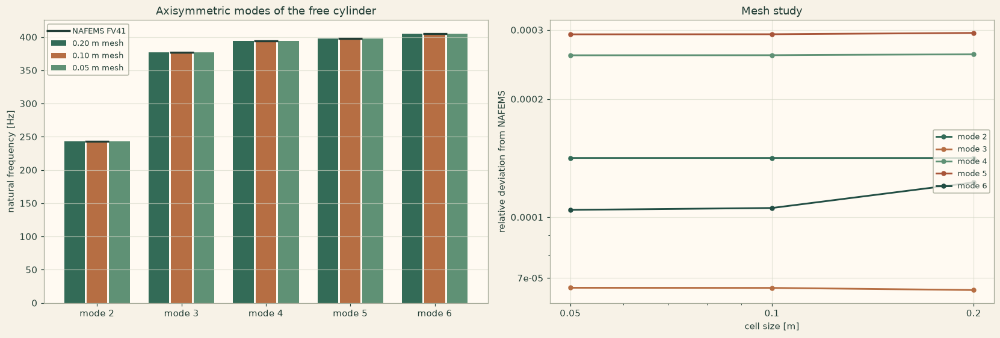
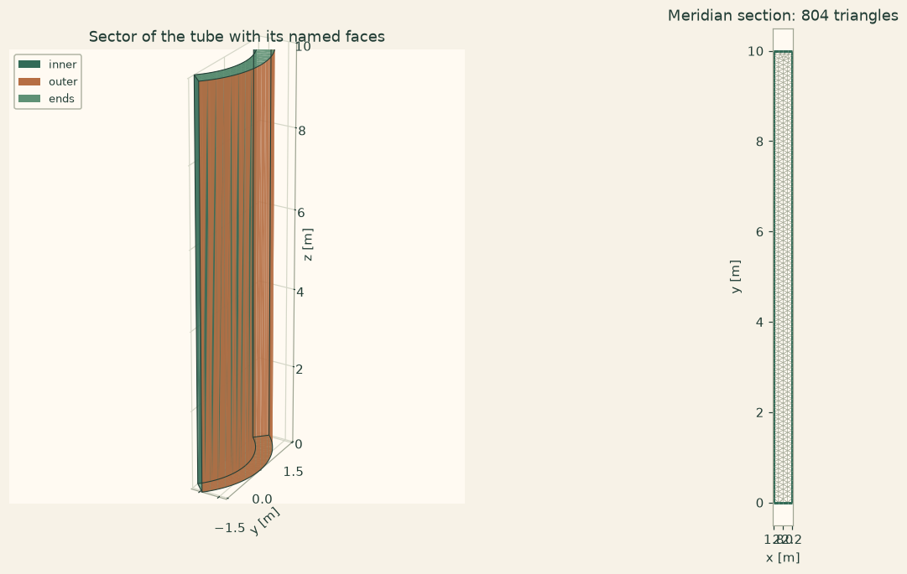

Docs › Examples › Natural frequencies of a free thick cylinder (NAFEMS FV41)
Structural dynamics · 2D axisymmetric
Natural frequencies of a free thick cylinder (NAFEMS FV41)
The NAFEMS FV41 benchmark: the axisymmetric natural frequencies of an unsupported thick-walled steel tube.
Run locally with OneSimulation. The example downloads are free. Running them requires an activated runtime. Runtime Alpha 0.2.1a7 · CPython 3.13 on macOS (Apple Silicon), Ubuntu 22.04 (x86-64), and Windows x64. Installation and activation · View pilot plans. Scope of the reference checks.


What it computes
OneSimulation cuts the tube from the STEP file to its meridian section and solves axisymmetric elasticity on quadratic triangles with a revolved finite-element space; a sparse shift-invert eigensolve returns the modes, keeping the rigid axial motion as a null mode. Three meshes from 0.2 m to 0.05 m are compared. The script that builds the STEP file comes with the notebook.
What it checks
The five elastic frequencies 243.50, 377.39, 394.21, 397.84 and 405.32 Hz agree with the NAFEMS targets 243.53 to 405.28 Hz within 0.03 % on every mesh, and the rigid axial mode comes out at 0 Hz.
Geometry
The notebook starts at the import of the CAD file free_cylinder_axisymmetric_modes.step: STEP (AP242), readable by any CAD program, with the names of the faces that the boundary conditions use. Put it next to the notebook.


The geometry script
The script free_cylinder_axisymmetric_modes_geometry.py builds the geometry with the CAD objects of OneSimulation and writes the file. Change a dimension there, run it, and run the notebook again.
"""Geometry of the OneSimulation example "Natural frequencies of a free thick cylinder (NAFEMS FV41)".
Builds a 90-degree sector of the hollow cylinder of the benchmark (inner radius 1.8 m, outer radius
2.2 m, length 10 m, axis along z) with the CAD objects of OneSimulation, centred on the x axis,
and writes free_cylinder_axisymmetric_modes.step. The example computes on its meridian section
y = 0. The faces are named inner, outer, bottom (z = 0) and top (z = 10 m).
"""
import numpy as np
from onesim.cad.d3 import AnnularCylinder
tube = AnnularCylinder(inner_radius=1.8, outer_radius=2.2, length=10.0)
sector = tube.sector(
np.pi / 2, axis=(0.0, 0.0, 1.0), start=(np.cos(-np.pi / 4), np.sin(-np.pi / 4), 0.0)
)
sector = sector.grouped(
inner=sector.select(
faces=lambda face: face.kind == "cylinder" and face.radius < 2.0
),
outer=sector.select(
faces=lambda face: face.kind == "cylinder" and face.radius > 2.0
),
bottom=sector.select(faces=lambda face: abs(face.center[2]) < 1e-9),
top=sector.select(faces=lambda face: abs(face.center[2] - 10.0) < 1e-9),
)
sector.save("free_cylinder_axisymmetric_modes.step")The notebook
The complete notebook, cell by cell. Run it to produce the figures and the comparison printout.
A thick-walled steel tube, inner radius 1.8 m, outer radius 2.2 m and 10 m long, is free in space. Its axisymmetric vibrations, in which every point moves only radially and axially, are a standard test of axisymmetric dynamic elements. Because the tube is unsupported, the first mode is the rigid motion along the axis at zero frequency; the elastic modes follow from
assembled on the meridian section with the volume element \(2\pi r\,dr\,dz\).
Steel, \(E=200\) GPa, \(\nu=0.3\), \(\rho=8000\) kg/m³. All faces are free.
The cylinder comes from the CAD file free_cylinder_axisymmetric_modes.step, a 90-degree sector with the faces inner, outer, bottom and top; the script free_cylinder_axisymmetric_modes_geometry.py builds it with the CAD objects of OneSimulation. The model is two-dimensional: it lives on the meridian section \(y=0\), where \(x\) is the radius \(r\).
Reference. NAFEMS, Selected Benchmarks for Natural Frequency Analysis, test FV41 (free cylinder, axisymmetric vibration): 0, 243.53, 377.41, 394.11, 397.72 and 405.28 Hz. As a rough independent check, the first axial mode of a free bar of the same length has \(f=\sqrt{E/\rho}\,/(2L)=250\) Hz; the lateral inertia of the thick wall lowers it slightly.
import numpy as np
from onesim.cad.exchange import load
from onesim.materials import IsotropicSolid
from onesim.meshing import TriangularMesher
from onesim.numerics import Numerics
from onesim.numerics.fem import FiniteElement, Lagrange, RevolvedH1SpaceFactory
from onesim.numerics.linear import SparseDirect, SparseSymmetricEigenSolver
from onesim.physics.solid_mechanics import (
LinearElasticity,
TractionFree,
structural_modes,
)
from onesim.simulation import Problem, Simulation
from onesim.visualization import plots, theme
theme.set()Geometry and mesh
load returns the sector, section its meridian section. Three meshes of triangles with cells of 0.2 m, 0.1 m and 0.05 m.
cylinder = load("free_cylinder_axisymmetric_modes.step")
faces = cylinder.boundaries
meridian = cylinder.section((0, 1, 0), origin=(0, 0, 0))
sizes = [0.2, 0.1, 0.05]
meshes = [TriangularMesher(target_size=size).generate(meridian) for size in sizes]
fig = plots.figure(1, 2, size=(14, 7))
plots.geometry(
cylinder,
selection={
"inner": faces.inner,
"outer": faces.outer,
"ends": faces.bottom | faces.top,
},
labels=False,
camera=plots.Camera(elevation=25, azimuth=-60),
title="Sector of the tube with its named faces",
ax=fig[0],
)
plots.mesh(
meshes[1],
groups=("all",),
legend=False,
title=f"Meridian section: {meshes[1].cell_count} triangles",
ax=fig[1],
)
plots.show()Model
LinearElasticity with axisymmetric kinematics: displacement components \(u_r\) and \(u_z\), strains \(\varepsilon_{rr},\varepsilon_{zz},\varepsilon_{\theta\theta}=u_r/r,\gamma_{rz}\). The revolved finite-element space adds the factor \(2\pi r\) to every integral. The free tube has the rigid axial motion as a null mode, which the modal analysis keeps; a sparse shift-invert solve returns the eight modes nearest 300 Hz.
steel = IsotropicSolid(
density=8000.0,
specific_heat_capacity=460.0,
thermal_conductivity=50.0,
youngs_modulus=200e9,
poisson_ratio=0.3,
thermal_expansion_coefficient=12e-6,
)
model = LinearElasticity(
domain=meridian.domain(), material=steel, kinematics="axisymmetric"
)
problem = Problem(
name="Free cylinder",
geometry=meridian,
physics=(model,),
boundary_conditions=(
TractionFree(boundary=meridian.boundaries.all, physics=model),
),
)
numerics = Numerics(
spatial=FiniteElement(element=Lagrange(order=2), provider=RevolvedH1SpaceFactory()),
linear_solver=SparseDirect(),
)
results = [
Simulation(problem=problem, mesh=mesh, numerics=numerics).solve_stationary()
for mesh in meshes
]
modes = [
structural_modes(
result,
model,
mode_count=8,
target_frequency=300.0,
zero_eigenvalue_tolerance=1.0,
eigensolver=SparseSymmetricEigenSolver(tolerance=1e-10),
)
for result in results
]Results
The six lowest frequencies on each mesh against the NAFEMS targets.
target = np.array([0.0, 243.53, 377.41, 394.11, 397.72, 405.28])
lowest = [np.sort(mode_set.frequencies)[:6] for mode_set in modes]
print(
"mode NAFEMS [Hz] "
+ " ".join(f"{size:.2f} m mesh" for size in sizes)
+ " deviation on the finest mesh"
)
for k, reference in enumerate(target):
print(
f"{k + 1:4d} {reference:12.2f} "
+ " ".join(f"{frequencies[k]:13.2f}" for frequencies in lowest)
+ (
f" {100 * (lowest[-1][k] / reference - 1):+14.3f} %"
if reference
else f" {'(rigid axial motion)':>22s}"
)
)
print(
f"free-bar estimate of the first axial mode: {np.sqrt(200e9 / 8000.0) / 20:.1f} Hz"
)Figure
The frequencies of the elastic modes on the three meshes against the targets, and the deviation over the cell size: already on the coarsest mesh the quadratic elements are converged, and what is left, a few parts in ten thousand, is of the order of the rounding of the published values.
fig = plots.figure(1, 2, size=(15, 5))
plots.bars(
[f"mode {k}" for k in range(2, 7)],
{f"{size:.2f} m mesh": frequencies[1:] for size, frequencies in zip(sizes, lowest)},
reference={"NAFEMS FV41": target[1:]},
ylabel="natural frequency [Hz]",
title="Axisymmetric modes of the free cylinder",
ax=fig[0],
)
plots.line(
sizes,
{
f"mode {k}": [
abs(frequencies[k - 1] / target[k - 1] - 1) for frequencies in lowest
]
for k in range(2, 7)
},
markers=True,
scale="loglog",
xlabel="cell size [m]",
ylabel="relative deviation from NAFEMS",
title="Mesh study",
legend="center right",
ax=fig[1],
)
plots.show()Going further
Make the wall thinner in free_cylinder_axisymmetric_modes_geometry.py and write the STEP file again: the breathing mode near the ring frequency \(\sqrt{E/\rho}/(2\pi R)\) separates from the axial modes. Clamp one end to compare with the supported variants of the benchmark.